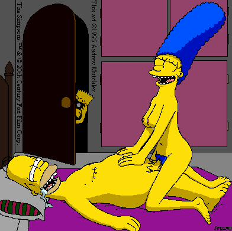

Its midnight. April 1 has passed and i ask myself why we even have such a day. With daily mischief and mayhem, only a fool would cherish a day like this. I'm fuckin tired of the repetition of life constantly favoring the beautiful, talented, rich, and snobby muddafuckin perfect people. No one understands except for those who are actually in that position. Everyday I ask myself the purpose of life. And everyday I pretend god replies. I pretend god tells me that life is about experiencing and understanding what he has created. But then again, i don't know shit about this world. I try rotating my life with common sense and process of elimination. But still, i'm nowhere and nothing. People talk behind your back, rip your shit, and try to help themselves every chance they get. I personally don't believe in shitty chitty shit chat. Its pointless and ignorant. And i don't know if its just me, but i swear that life runs in circles and drugs, dreams, and reality are pretty much all the same. It doesn't matter. People say i'm random. HEh. People say i'm perverted. Heh. People say i'm a looser. Heh. But after hearing shit all my life, it begins to numb your heart, and everything is painless and soon after you become more insane and start to stop caring for a world of rank and popularity and total bullshit. You become less concerned about daily life and the outside world as a whole. You also stop caring about short term goals and focus on the long ones. School becomes a punishment and your life is pointless yet you don't want to do anything bad coz why waste something you can manipulate? You begin to think to yourself that life isn't about you anymore. Its also not about what other bitches think of you. Its about understanding and experiencing. Kinda like what i told myself before. Except instead of understanding something and carrying your motivation forward, you pull it back. And then you take advantage of what you understand and exploit it. Not for fun, not for profit, but because you want to show the world that you really aren't worthless. But even more than impressing the world you hate, you want to inhale glory and exhale your voice. We are coming. Be ready.
m4d r3ps3ct to xhostile, rewted, ZenoMorpH, Phiber, PHC, cyberfuckers, #sesame, ph33r th3 b33r, N30, SugarKing (j00r aWesUm), Artech, Sabu, Team Echo, hack.be, #feed-the-goats, team infinity, Devil-C, p4riah, PS911, ALOC, Forpaxe, McIntyre, pr1sm, 139_r00ted, ne0h, subartic, HiP, Legion 2000, Xessor, mistuh clean, lyp0x, Da^Bomb, mozy, Deicidal, HIT2000, spinkus, bl0w team, an0nym0us, un1x b0wl1ng t34m, ULG, cult_hero, LevelSeven (miss ya vent), v00d00, Hi-Tech Hate, gH, analognet, attrition.org, hackernews.com, packetstorm.securify.com, projectgamma.com, net-security.org, zataz.com and dutchthreat.org and m3g4 pr0ps to all the defaceRs that don't speak ingl00Sh!